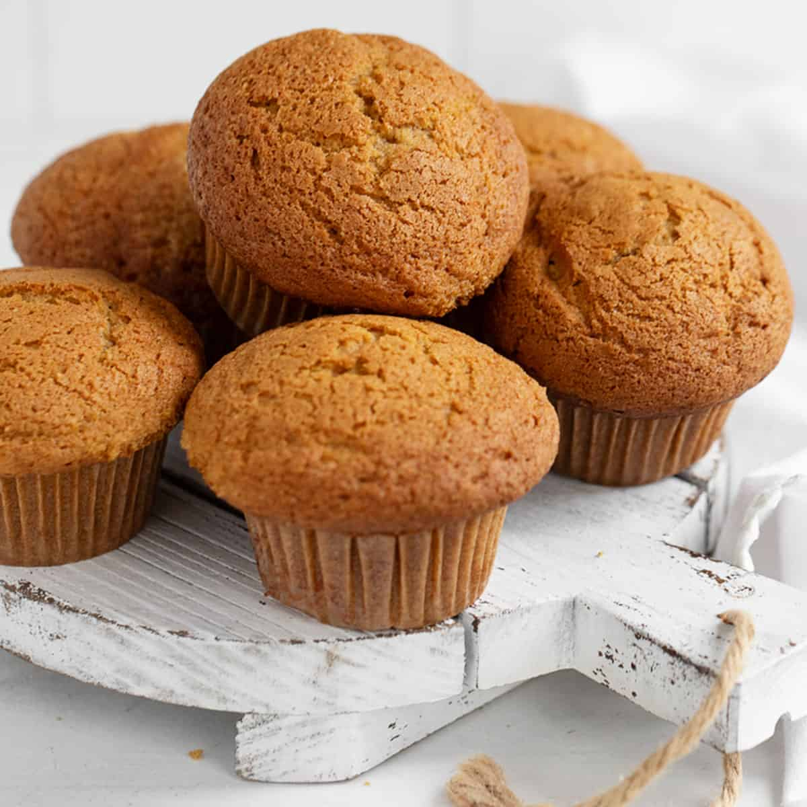

Challah
Challah or hallah, also known as berches in Central Europe, is a special bread in Jewish cuisine, usually braided and typically eaten on ceremonial occasions such as Shabbat and major Jewish holidays (other than Passover). It shares many similarities with brioche bread, especially ingredient wise. It does not, however, contain any dairy, like brioche often does. This is in order for the bread to stay pareve, or having no meat or dairy. Source: WikipediaFocaccia
Focaccia is a flat leavened oven-baked Italian bread. It is best characterized by small dimples in its surface, a coating of olive oil, and being topped with rosemary or other herbs. It is used in sandwiches and as a dish of its own, and is sometimes combined with other ingredients, such as tomatoes or cheese to cook with it to make it its own dish. Source: Wikipedia

Sourdough
Sourdough or sourdough bread is a bread made by allowing the dough to ferment before baking. In addition to leavening the bread, the fermentation process produces lactic acid, which gives the bread a sour taste and improves its keeping-qualities. It was actually the common way of making bread throughout most of history, until around the Middle Ages. Source: WikipediaRye Bread
Rye bread is a type of bread made with various proportions of flour from rye grain. It can be light or dark in color, depending on the type of flour used and the addition of coloring agents, and is typically denser than bread made from wheat flour. Compared to white bread, it is higher in fiber, darker in color, and stronger in flavor. The world's largest exporter of rye bread is Poland. Source: Wikipedia
Brioche
Brioche is a bread of French origin whose high egg and butter content gives it a rich and tender crumb. It is considered a type of French pastery because of its rich texture and taste, but is made in the same way that bread is. It gets its fluffiness from extra ingredients such as butter and milk that might not be found in every single type of bread. Source: WikipediaCiabatta
Ciabatta is an Italian white bread created in 1982 by a baker in Adria, Veneto, in response to the popularity of French baguettes. Ciabatta is somewhat elongated, broad, and flat, and is baked in many variations, although unique for its alveolar holes. Ciabatta is made with a strong flour and uses a very high hydration dough. It got its name for its flat shape, Ciabatta meaning 'carpet slipper' in Italian. Source: Wikipedia
Pumpernickel
Pumpernickel is a typically dense, slightly sweet rye bread traditionally made with sourdough starter and coarsely ground rye. It is sometimes made with a combination of rye flour and whole rye grains. Basically, it is a combination of dark rye bread and sourdough. Its name is assumed to have come from an insult, depicting the bread as negative. Pumpernickel has been long associated with the Westphalia region of Germany, first referred to in print in 1450. Source: WikipediaPita Bread
Pita or pitta (British English) is a family of yeast-leavened round flatbreads baked from wheat flour, common in the Mediterranean, Levant, and neighboring areas. It includes the widely known version with an interior pocket, also known as Arabic bread. The first form of flatbread, of which pita is very similar, is thought to have been made 14,500 years ago, by the Natufian people in what is now Jordan, during the Stone Age. Source: WikipediaNaan
Naan is a leavened, oven-baked or tawa-fried flatbread, that can also be baked in a tandoor. It is characterized by a light and fluffy texture and golden-brown spots from the baking process. Naan is found in the cuisines of Central Asia, South Asia, Southeast Asia, and the Caribbean. Composed of white or wheat flour and combined with a leavening agent, typically yeast, naan dough develops air pockets that contribute to its fluffy and soft texture. Source: WikipediaCinnamon Roll
A cinnamon roll (also known as cinnamon bun, cinnamon swirl, cinnamon scroll, cinnamon Danish and cinnamon snail) is a sweet roll commonly served in Northern Europe (mainly in Nordic countries, but also in Austria, Estonia, The Netherlands and Germany) and North America. A cinnamon roll consists of a rolled sheet of yeast-leavened dough onto which a cinnamon and sugar mixture is sprinkled over a thin coat of butter. The dough is then rolled, cut into individual portions and baked. Source: Wikipedia

Muffins
Quickbread (American) muffins are baked, individual-sized, cupcake-shaped foods with a "moist, coarse-grained" texture. Muffins are available in both savoury varieties, such as cornmeal and cheese muffins, or sweet varieties such as blueberry, chocolate chip, lemon or banana flavours. Sweetened muffins range from lightly sweetened muffins to products that are "richer than many cakes in fat and sugar." Source: WikipediaCupcakes
A cupcake is a small cake designed to serve one person, which may be baked in a small thin paper or aluminum cup. As with larger cakes, frosting, icing and various other cake decorations such as fruit and candy may be applied. A standard cupcake uses the same basic ingredients as standard-sized cakes: butter, sugar, eggs, and flour. Nearly any recipe that is suitable for a layer cake can be used to bake cupcakes. Source: Wikipedia